|
4-2-3-1
|
United States | 4 | - | 1 | Paraguay |
4-4-2
|
| HT 3-0 | ||||||
|
FIFA World CupSaturday 13 June 2026
|
||||||
- Venue
- Los Angeles Stadium
- Attendance
- 70,492
- Referee
- Danny Desmond Makkelie
Own goal7'
D. Bobadilla
Goal31'
F. Balogun
Assist: C. Pulisic
Goal45+5'
F. Balogun
Assist: M. Tillman
Substitution46'
C. Pulisic
S. Berhalter
Yellow card59'
T. Adams
- 2
Substitution72'
S. Dest
T. Weah
F. Balogun
R. Pepi
Substitution82'
M. Tillman
G. Reyna
Goal90+8'
G. Reyna
Assist: A. Freeman
Whistle45+6'
45+6'
Yellow card10'
J. Cáceres
Substitution46'
D. Bobadilla
Mauricio
Yellow card53'
M. Almirón
Substitution62'
A. Sanabria
Á. Arce
Goal73'
Mauricio
Assist: J. Enciso
- 2
Substitution79'
M. Almirón
R. Sosa
J. Cáceres
G. Velázquez
Yellow card79'
D. Gómez
Substitution80'
D. Gómez
A. Romero
Yellow card88'
Á. Arce
Yellow card90+3'
J. Alonso
United States | |
|---|---|
Goalkeeper | |
| 24 | M. Freese |
Defender | |
| 3 | C. Richards |
| 5 | A. Robinson |
| 13 | T. Ream |
| 16 | A. Freeman |
Midfielder | |
| 2 | S. Dest 72' |
| 4 | T. Adams 59' |
| 8 | W. McKennie |
| 10 | C. Pulisic 46' |
| 17 | M. Tillman 82' |
Forward | |
| 20 | F. Balogun 31'45+5'72' |
Substitutes | |
| 7 | G. Reyna 82'90+8' |
| 9 | R. Pepi 72' |
| 14 | S. Berhalter 46' |
| 21 | T. Weah 72' |
Paraguay | |
Goalkeeper | |
| 12 | O. Gill |
Defender | |
| 3 | O. Alderete |
| 4 | J. Cáceres 10'79' |
| 6 | J. Alonso 90+3' |
| 15 | G. Gómez |
Midfielder | |
| 8 | D. Gómez 79'80' |
| 10 | M. Almirón 53'79' |
| 14 | A. Cubas |
| 16 | D. Bobadilla 7'46' |
Forward | |
| 9 | A. Sanabria 62' |
| 19 | J. Enciso |
Substitutes | |
| 2 | G. Velázquez 79' |
| 7 | R. Sosa 79' |
| 11 | Mauricio 46'73' |
| 17 | A. Romero 80' |
| 18 | Á. Arce 62'88' |


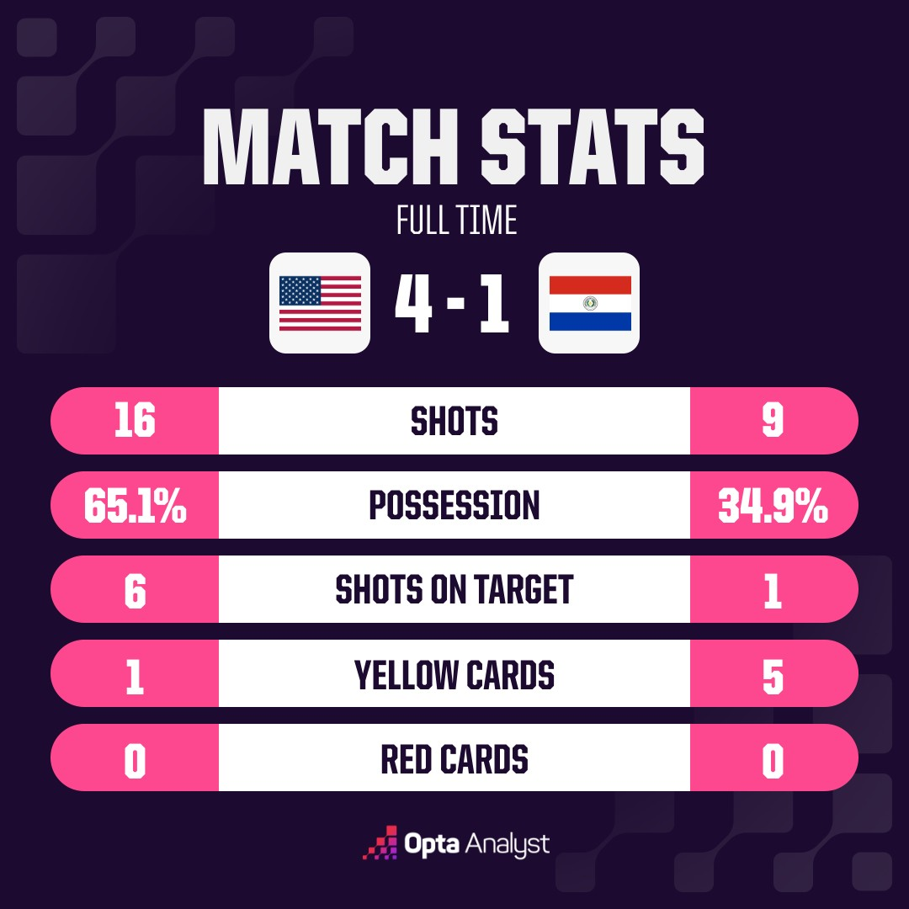
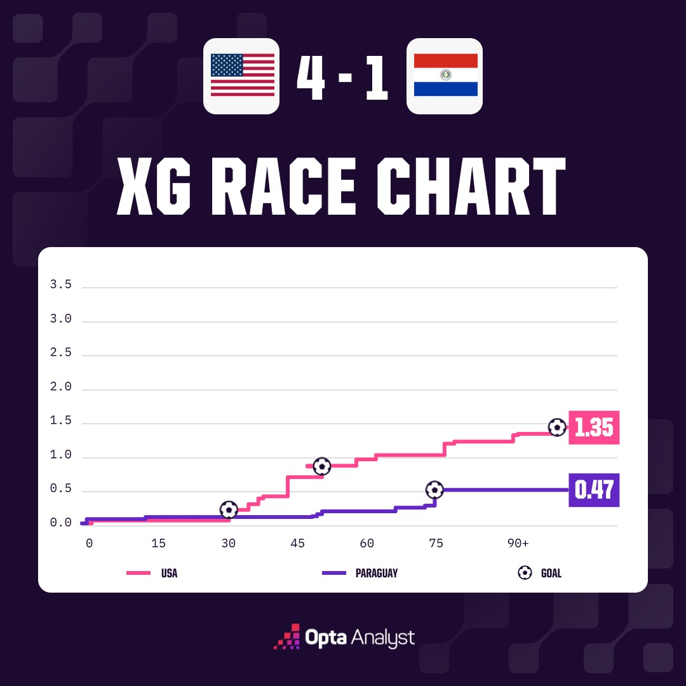
100'
Paraguay have failed to win in their last 4 games in the FIFA World Cup, their last longer winless streak was from 7th June 1986 to 19th June 1998, a run of 5 games.
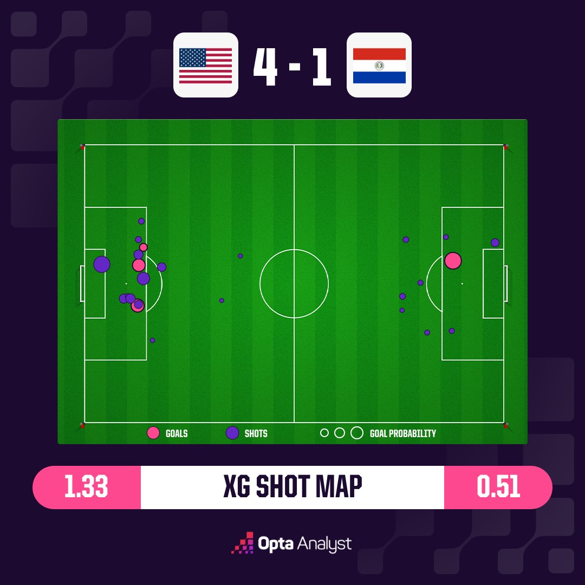
90+9'
FULL-TIME! That’s it for this game, as the referee blows the final whistle, with United States getting the better of Paraguay 4-1.
90+8'
GOAL! United States have extended their lead! It's Giovanni Reyna who has got the goal, and Paraguay are now three goals behind, with United States now in a strong position to record a victory.
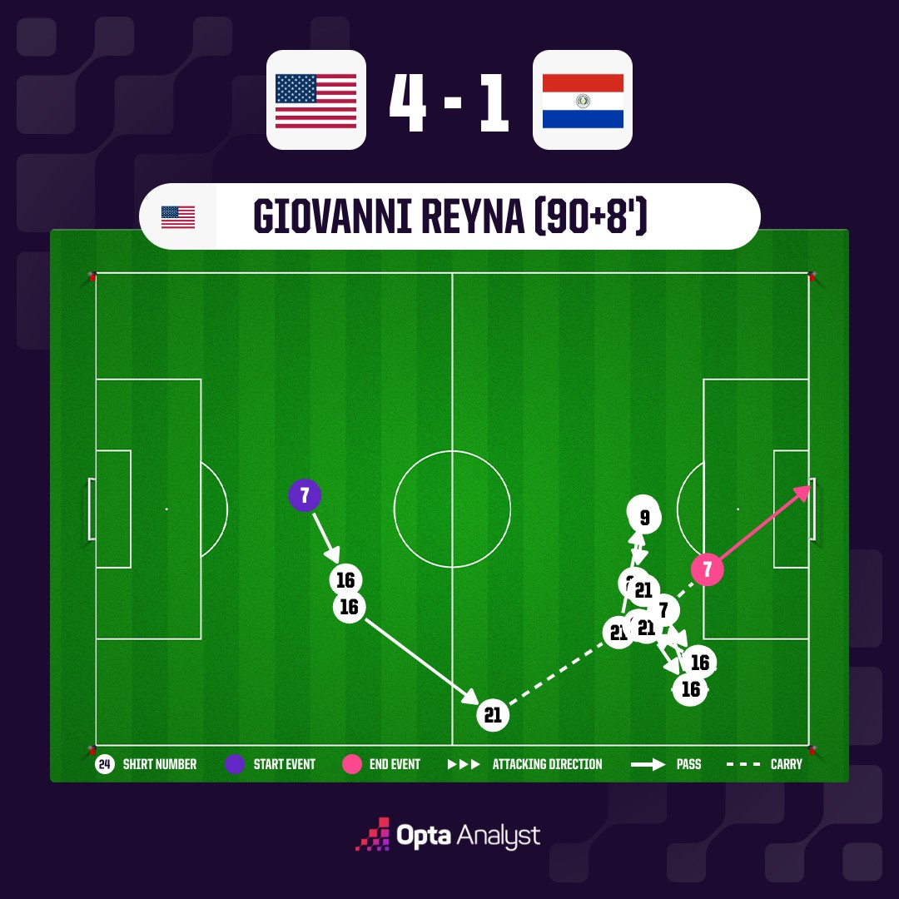
90+7'
United States are having plenty of the ball, with 65.07% possession in the last 15 minutes. However, they have been unable to transfer that possessional dominance into a goal during that period.
90+7'
United States have attempted the last 5 shots in this game, Paraguay last shot was taken by Mauricio in the 73rd minute.
90+7'
Great block from Andrés Cubas, as they get in the way of an attempt from Timothy Weah that might have been set to cause the goalkeeper some problems. Solid defending from the Paraguay player.
90+6'
Still behind, but Paraguay are refusing to roll over - defensive urgency rising as they fend off more pressure and push for a late turnaround.
90+4'
A free-kick in a dangerous position now for United States, after a foul from Alejandro Romero on Sebastian Berhalter. Can United States make Paraguay pay for that rashness from Alejandro Romero?
90+3'
The referee goes to their pocket and pulls out a yellow card, which is brandished in the direction of Júnior Alonso. Will they be able to avoid a second booking?
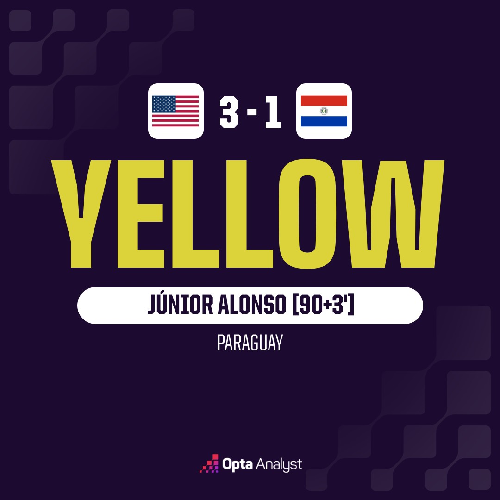
90+3'
Free-kick! A foul from Júnior Alonso on Tyler Adams. It is well away from Paraguay’s goal, so it is unlikely to result in a chance for United States.
90+1'
Foul! A free-kick now in a dangerous area for United States, after Giovanni Reyna is fouled by Andrés Cubas. Can United States make the most of this opportunity?
90+1'
A chance goes begging as Sebastian Berhalter gets off a shot that does not hit the target. They might have done better with that one, but instead it is a goal-kick to Paraguay.
90+1'
Still behind, but Paraguay are refusing to roll over - defensive urgency rising as they fend off more pressure and push for a late turnaround.
89'
Timothy Weah goes in on Júnior Alonso and concedes a foul. The free-kick is not in a particularly dangerous area from United States’s viewpoint, though.
89'
A chance goes begging as Ricardo Pepi gets off a shot that does not hit the target. They might have done better with that one, but instead it is a goal-kick to Paraguay.
88'
That is a booking for Álex Arce, who has received their first yellow card. They are not happy with the decision, but it is done now, and they will have to be careful for the rest of this game.
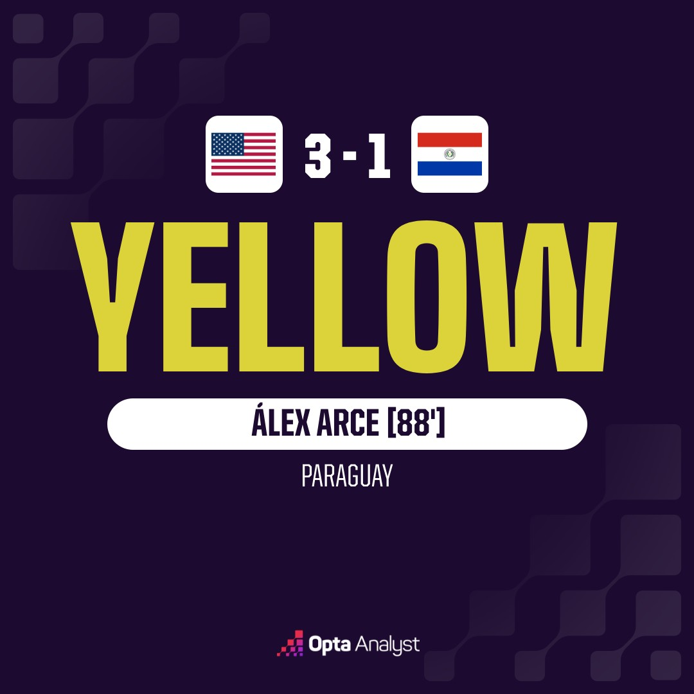
88'
Free-kick! A foul from Álex Arce on Giovanni Reyna. It is well away from Paraguay’s goal, so it is unlikely to result in a chance for United States.
87'
This game is certainly in a bit of a lull now, with neither team having had an attempt at goal in the past 10 minutes. It could do with something to spark it into life. Paraguay have had more possession during the quiet spell, but are yet to do much with it.
86'
Free-kick! A foul from Omar Alderete on Tyler Adams. It is well away from Paraguay’s goal, so it is unlikely to result in a chance for United States.
86'
A free-kick to Paraguay, as Ricardo Pepi goes in and fouls Ramón Sosa. However, United States will not mind giving one away in this area too much, with plenty of distance to their goal.
84'
Free-kick! A foul from Giovanni Reyna on Alejandro Romero. It is well away from United States’s goal, so it is unlikely to result in a chance for Paraguay.
83'
That’s offside! A switched-on defensive line from United States, as they step up at the right time to catch Gustavo Gómez offside, and the assistant referee’s flag is up.
83'
Timothy Weah goes in on Julio Enciso and concedes a foul. The free-kick is not in a particularly dangerous area from United States’s viewpoint, though.
82'
Substitution! Giovanni Reyna replaces Malik Tillman for United States as the manager shuffles the pack. Can Giovanni Reyna make an impression as this match continues?
80'
A substitution for Paraguay sees Diego Gómez replaced by Alejandro Romero. There does not appear to be any obvious sign of an injury, so that is a tactical switch.
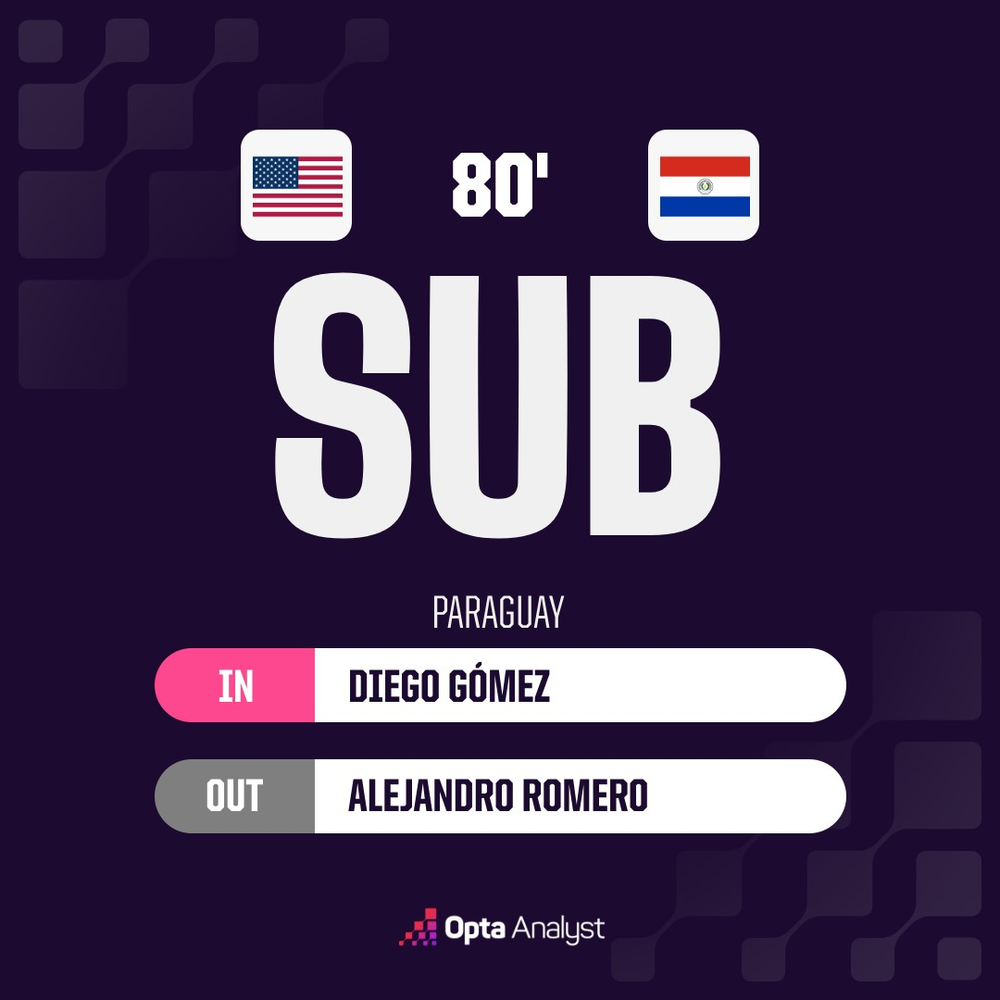
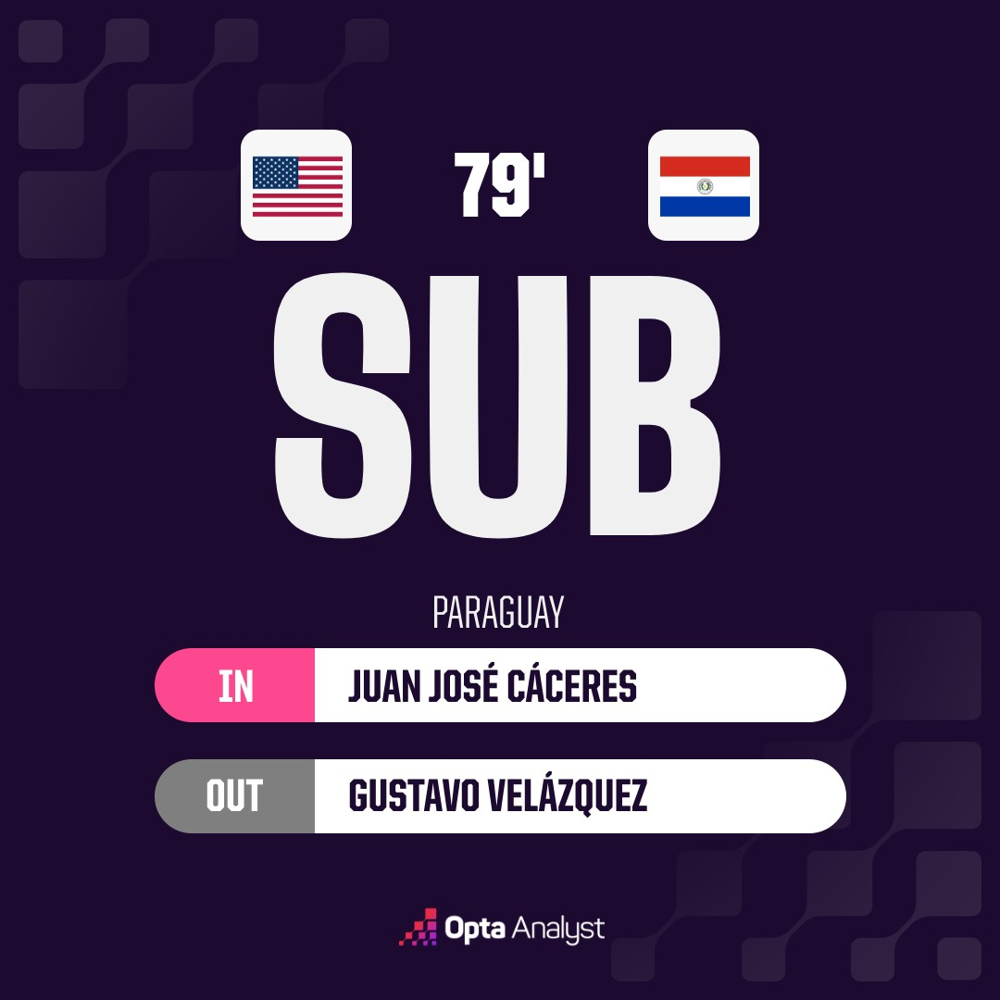
79'
Substitution! Gustavo Velázquez replaces Juan José Cáceres for Paraguay as the manager shuffles the pack. Can Gustavo Velázquez make an impression as this match continues?
79'
The Paraguay manager is looking to the substitutes’ bench, bringing on Ramón Sosa in place of Miguel Almirón. Will the change make a difference? Let’s find out!
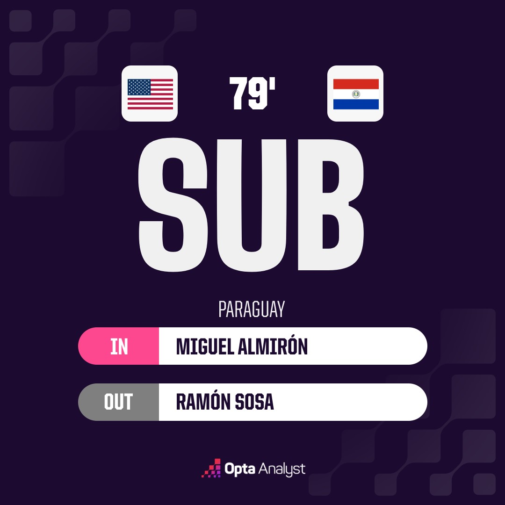
79'
BOOKING! Yellow card for Diego Gómez, who is penalised for a foul. The referee waves away their remonstrations, and now they will have to be careful.
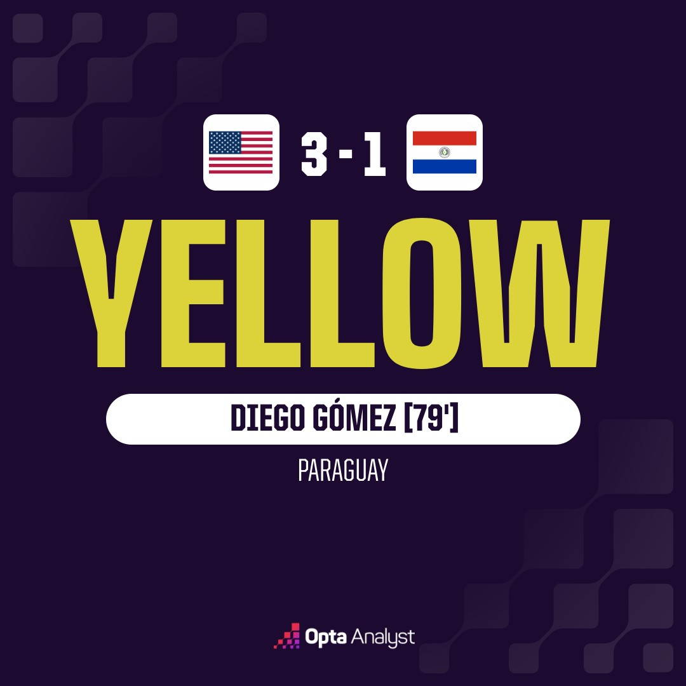
79'
Good play from Malik Tillman, who draws a foul from Diego Gómez to hand United States a free-kick in a dangerous position. Will they create something from this set-piece?
77'
No luck! Timothy Weah takes on a shot that, had they got it right, might have been set to test the goalkeeper, but instead it is sent off target and Paraguay come away unscathed.
77'
Andrés Cubas goes in on Malik Tillman and concedes a foul. The free-kick is not in a particularly dangerous area from Paraguay’s viewpoint, though.
76'
Entering the final stages of this contest, let’s check on the possession stats for each team. It is United States who have had the more of the ball, with 65.21%, while Paraguay have had to settle for 34.79%. The score is 3-1.
75'
Chance! A shot from inside the area from Malik Tillman was heading in, but Orlando Gill makes a fine stop to keep it out. A big save from the Paraguay shot-stopper!
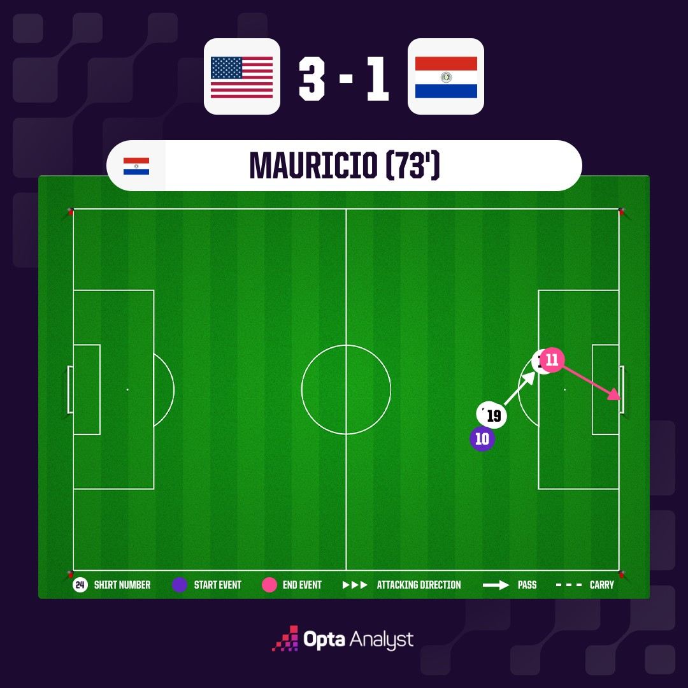
73'
Paraguay ended a run of 371 minutes without a goal in the FIFA World Cup, their longest since going 320 minutes without scoring from 12th June 2002 to 20th June 2006.
73'
GOAL! Will this just be a consolation for Paraguay, or could this be the start of a miraculous comeback? They are still two goals behind, but maybe there is a glimmer of hope.
73'
Antonee Robinson goes in on Juan José Cáceres and concedes a foul. The free-kick is not in a particularly dangerous area from United States’s viewpoint, though.
72'
Substitution! Ricardo Pepi replaces Folarin Balogun for United States as the manager shuffles the pack. Can Ricardo Pepi make an impression as this match continues?
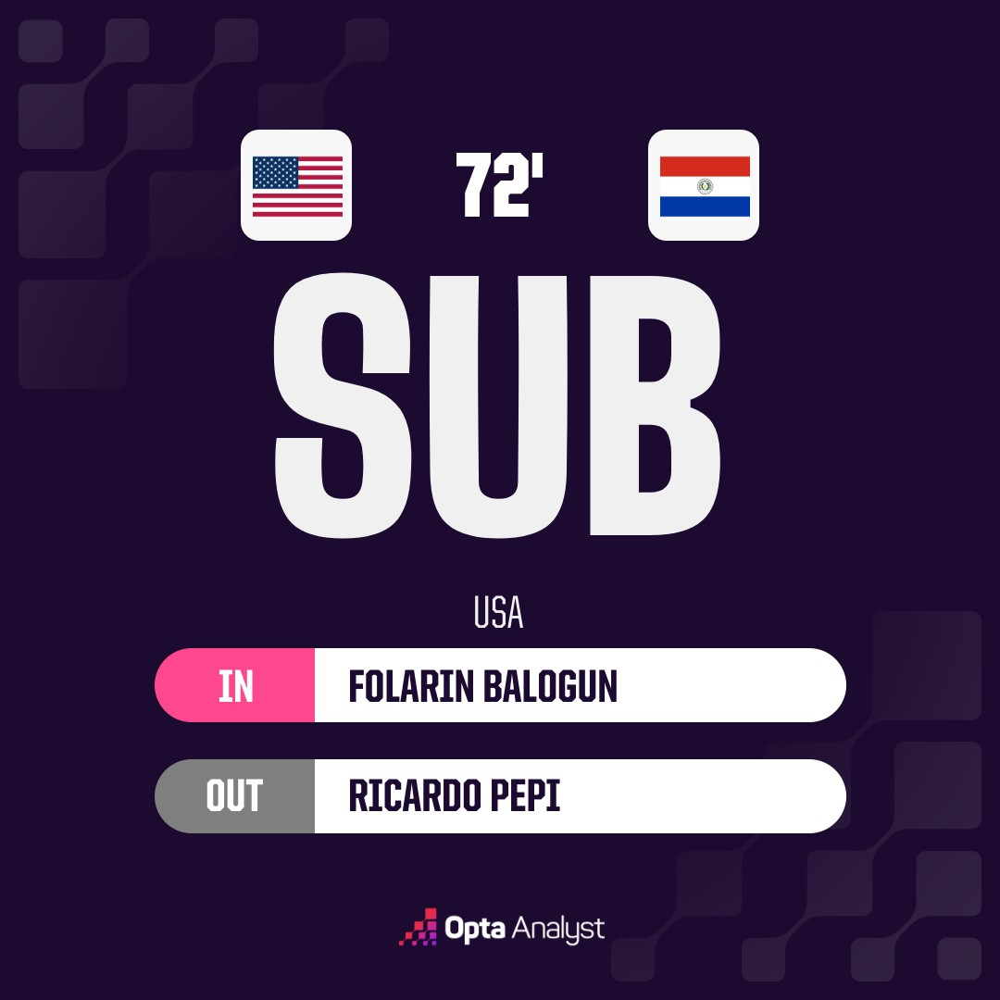
72'
United States are making a tactical change. Sergiño Dest is leaving the field and in their place comes Timothy Weah – we will soon see if this switch has the desired impact.
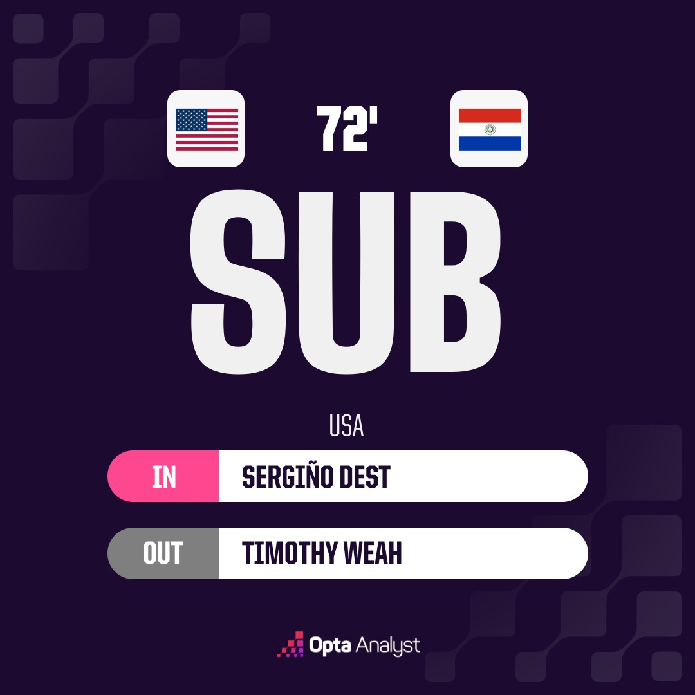
71'
A rash challenge from Juan José Cáceres, who sends Malik Tillman tumbling, giving United States a free-kick. It is not in a threatening position, but it gives them a chance to get back on the ball.
71'
Shot blocked! Miguel Almirón unleashes an attempt at goal, but the ball does not reach its target thanks to Antonee Robinson, who makes a solid block to stem the danger – for now.
67'
United States are controlling the tempo beautifully in this second period - another sequence of 20+ passes as they make Paraguay chase shadows and preserve their advantage.
66'
Just over an hour played, so let’s check on the shot count for each side. United States have had 10, getting 4 of those on target. Paraguay, meanwhile, have had no efforts on target, and 7 overall.
65'
No luck! Diego Gómez takes on a shot that, had they got it right, might have been set to test the goalkeeper, but instead it is sent off target and United States come away unscathed.
65'
Shot blocked! Julio Enciso unleashes an attempt at goal, but the ball does not reach its target thanks to Tyler Adams, who makes a solid block to stem the danger – for now.
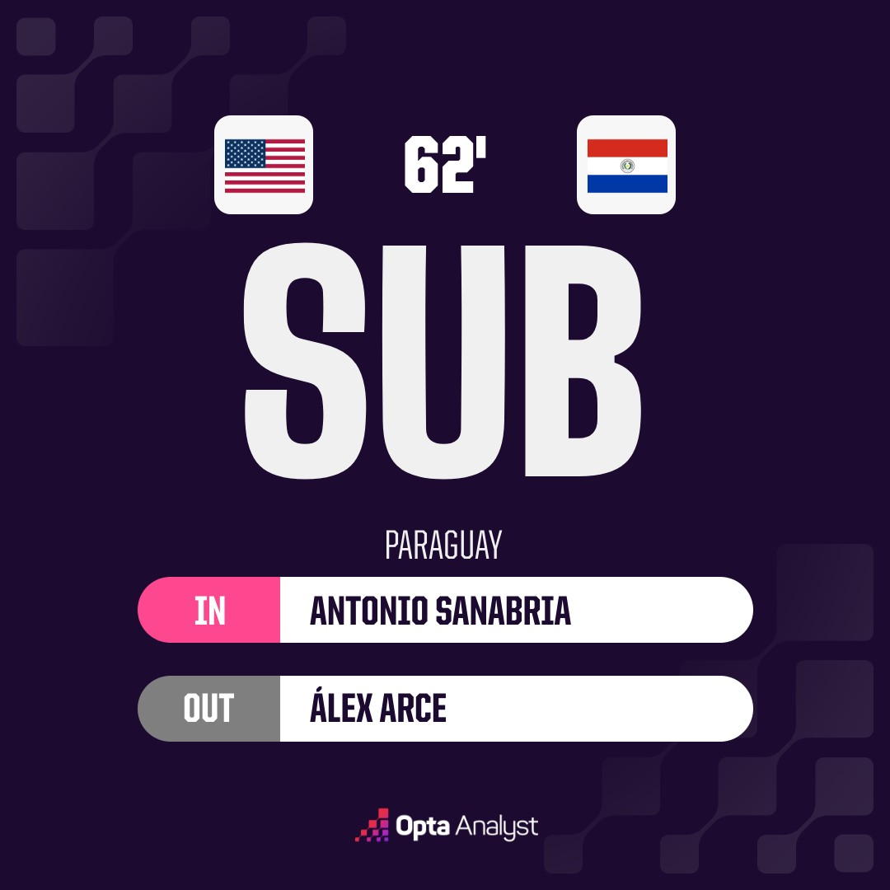
62'
Paraguay are making a tactical change. Antonio Sanabria is leaving the field and in their place comes Álex Arce – we will soon see if this switch has the desired impact.
62'
Still behind, but Paraguay are refusing to roll over - defensive urgency rising as they fend off more pressure and push for a late turnaround.
61'
A chance goes begging as Malik Tillman gets off a shot that does not hit the target. They might have done better with that one, but instead it is a goal-kick to Paraguay.
60'
A free-kick to Paraguay, as Alex Freeman goes in and fouls Julio Enciso. However, United States will not mind giving one away in this area too much, with plenty of distance to their goal.
59'
Yellow card! Tyler Adams will have to be careful from now on after they are cautioned.
59'
A free-kick to Paraguay, as Tyler Adams goes in and fouls Mauricio. However, United States will not mind giving one away in this area too much, with plenty of distance to their goal.
57'
Free-kick! A foul from Chris Richards on Julio Enciso. It is well away from United States’s goal, so it is unlikely to result in a chance for Paraguay.
57'
BLOCK! An intervention from Andrés Cubas might have just prevented a goal, with the defending player getting in the way of an attempt from Malik Tillman. Solid defending there!
56'
A foul from Andrés Cubas on Tyler Adams sees United States win a free-kick, but it is not in a dangerous position, so Paraguay should be confident they can defend it easily enough.
56'
Despite trailing, Paraguay are showing real defensive grit, digging in and stopping further damage as they try to build a platform.
53'
Yellow card! Miguel Almirón will have to be careful from now on after they are cautioned.
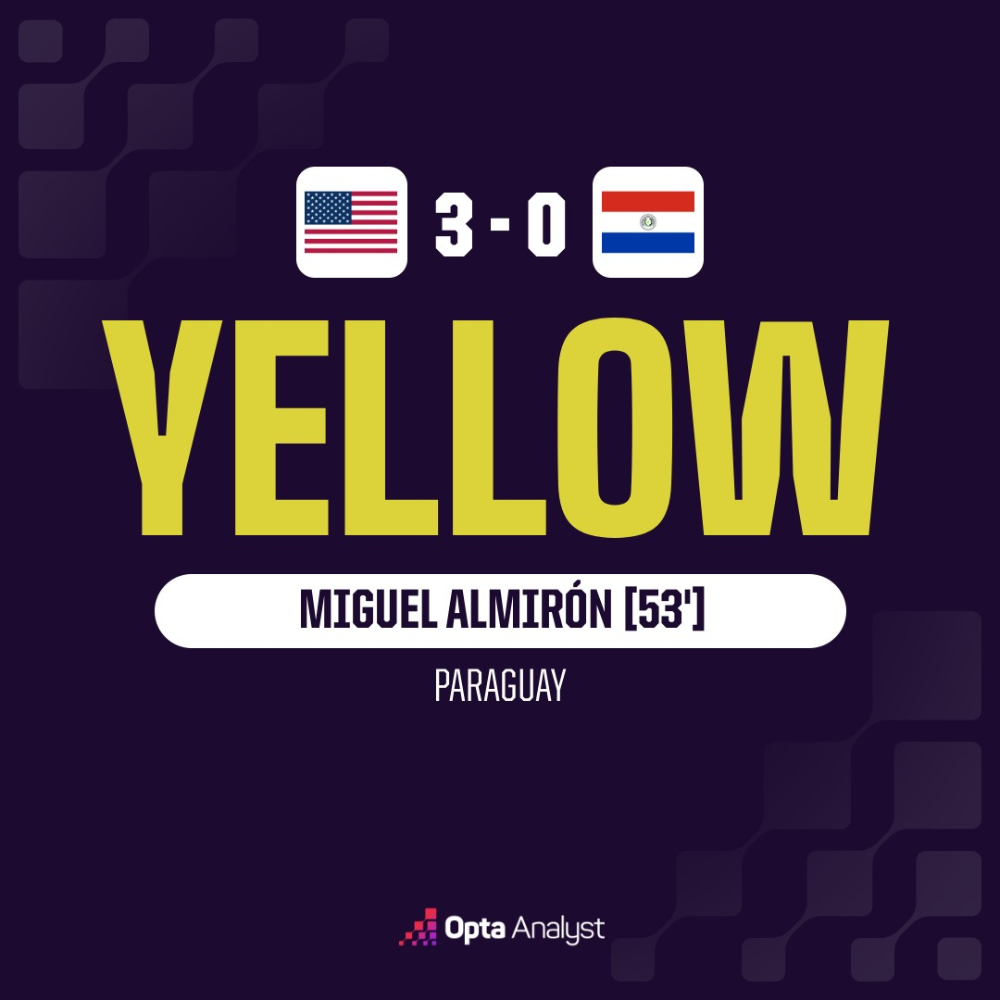
52'
Decision changed! After a VAR check, the decision has been overturned.
52'
We are going to VAR. The game has stopped for now with the assistant referee in the video booth now set to review the incident. Will the decision be altered?
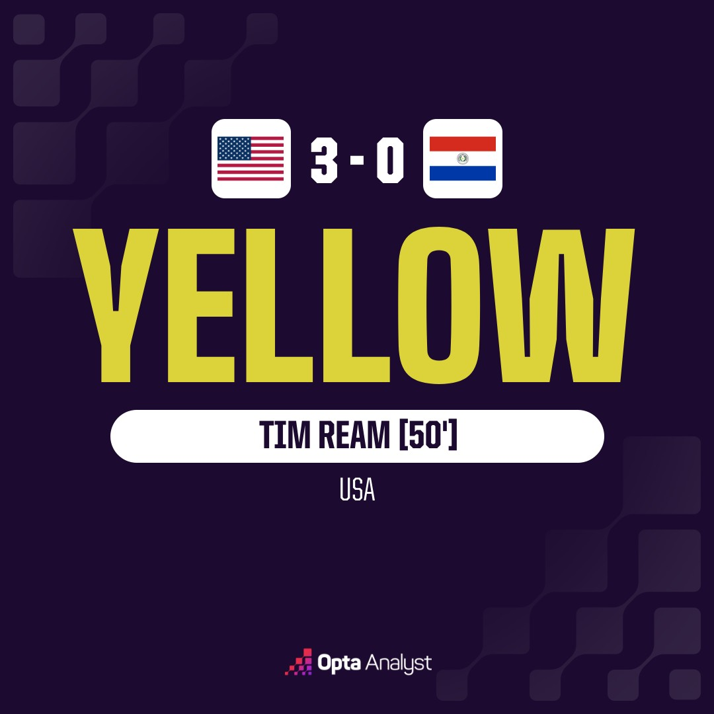
49'
Diego Gómez's effort is deflected out for a corner. Can Paraguay make anything of this set-piece?
48'
A free-kick to United States, as Gustavo Gómez goes in and fouls Folarin Balogun. However, Paraguay will not mind giving one away in this area too much, with plenty of distance to their goal.
47'
That might have been going in! A fantastic block from Omar Alderete, who gets in the way of a goal-bound effort from Folarin Balogun. Would the goalkeeper have been beaten? We will never know.
46'
A substitution for United States sees Christian Pulisic replaced by Sebastian Berhalter. There does not appear to be any obvious sign of an injury, so that is a tactical switch.
46'
A substitution for Paraguay sees Damián Bobadilla replaced by Mauricio. There does not appear to be any obvious sign of an injury, so that is a tactical switch.
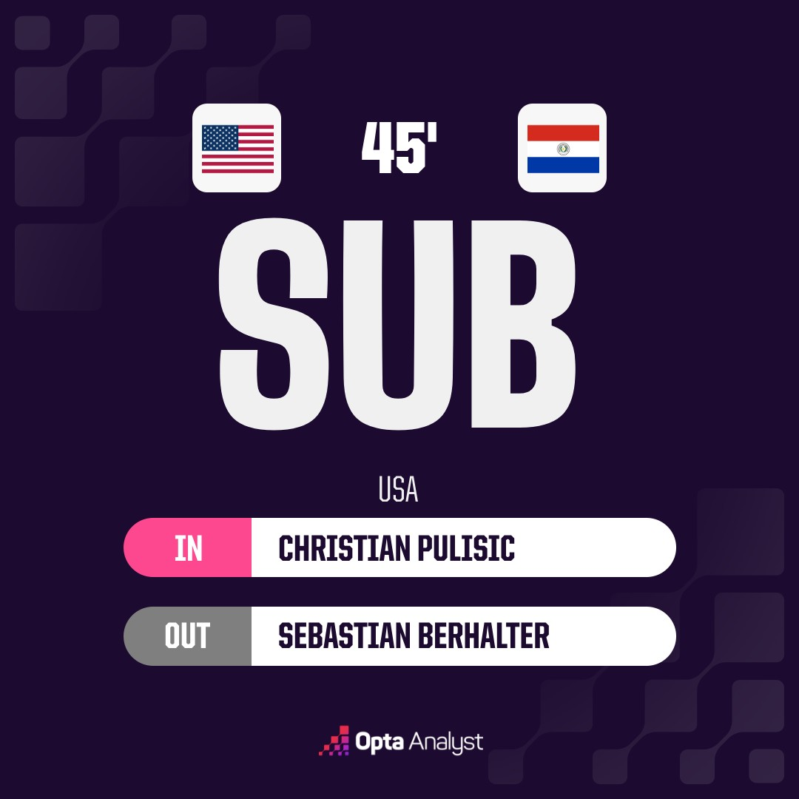
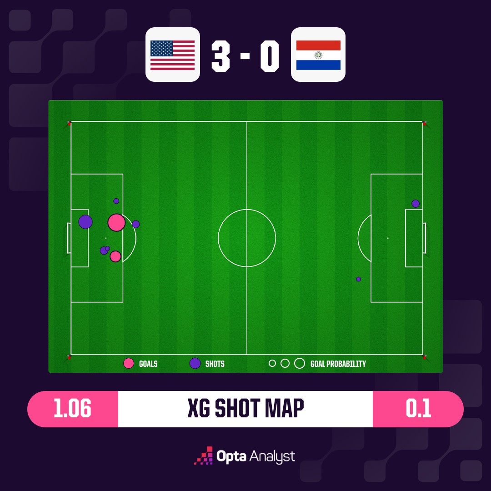
45+6'
Half-time! The referee blows the whistle and it is time for the interval. As we reach the break it is United States 3-0 Paraguay at Los Angeles Stadium.
45+5'
Is that game over? United States are now well ahead, having extended their lead to 3 goals thanks to Folarin Balogun’s effort. It’s now 3-0, and Paraguay face an uphill battle to get back into it.
45+5'
United States have scored 3 goals in the FIFA World Cup game for the first time since 5th June 2002 against Portugal (W3-2).
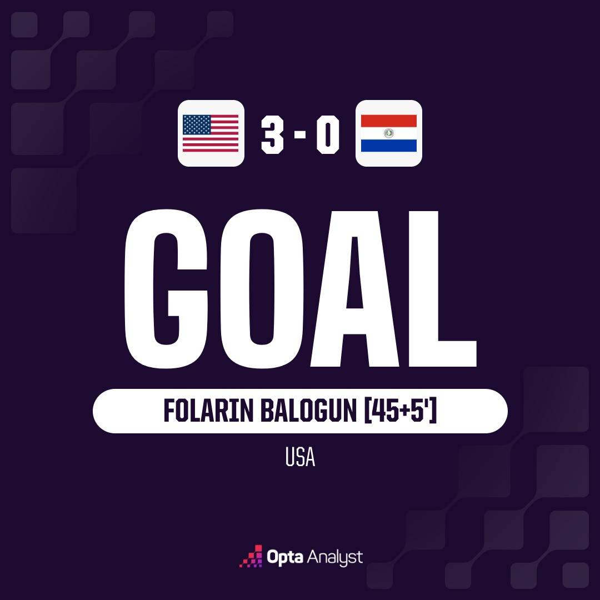
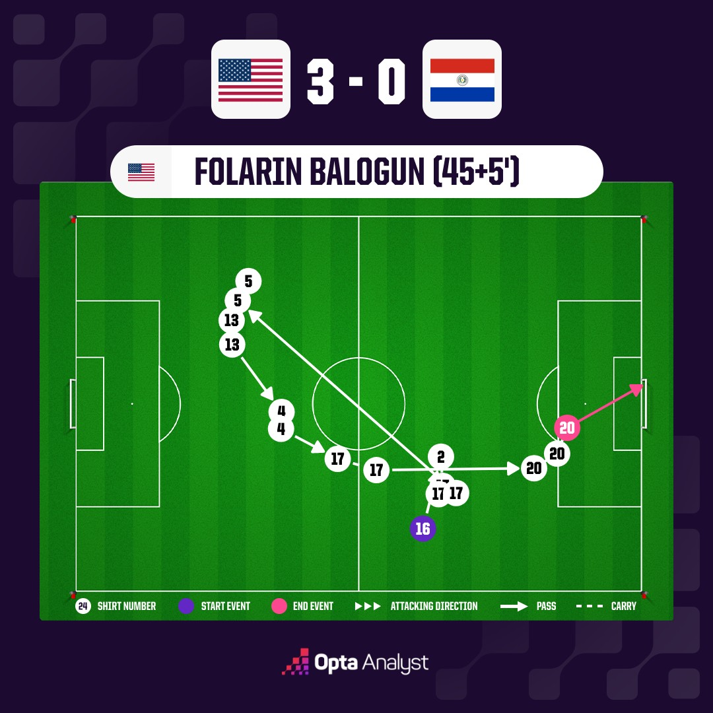
45+4'
Despite trailing, Paraguay are showing real defensive grit, digging in and stopping further damage as they try to build a platform.
45+2'
Free-kick! A foul from Malik Tillman on Miguel Almirón. It is well away from United States’s goal, so it is unlikely to result in a chance for Paraguay.
45+1'
Plenty of the ball in the last quarter-of-an-hour of this match for United States, but still Paraguay stand firm, despite having had only 23.28% of the ball in that period. Can United States make their possessional dominance count?
45+1'
Excellent defensive work from United States; their organization and success in key duels are effectively safeguarding their lead.
45+1'
A free-kick to Paraguay, as Chris Richards goes in and fouls Antonio Sanabria. However, United States will not mind giving one away in this area too much, with plenty of distance to their goal.
44'
It has been 30 minutes since Paraguay last attempted a shot in this game.
43'
United States have attempted the last 5 shots in this game, Paraguay last shot was taken by Julio Enciso in the 14th minute.
43'
Oh no! That should have been in! Malik Tillman was through but could not keep their composure when it mattered most. United States still lead, but they have not been able to extend it. Will that be the good fortune Paraguay need?
42'
A rash challenge from Christian Pulisic, who sends Juan José Cáceres tumbling, giving Paraguay a free-kick. It is not in a threatening position, but it gives them a chance to get back on the ball.
41'
Paraguay have not had a shot on target so far in this game.
40'
A rash challenge from Andrés Cubas, who sends Folarin Balogun tumbling, giving United States a free-kick. It is not in a threatening position, but it gives them a chance to get back on the ball.
39'
Antonio Sanabria goes in on Chris Richards and concedes a foul. The free-kick is not in a particularly dangerous area from Paraguay’s viewpoint, though.
38'
That is a disappointing effort from Chris Richards, who went for glory but got their attempt wrong, and the shot sailed off target. A frustrating moment for United States.
37'
United States win a corner after Malik Tillman sees a shot diverted wide by Andrés Cubas. Can United States make this opportunity count, or will Paraguay defend this?
35'
An opportunity for United States to extend their lead goes begging, as Folarin Balogun is unable to convert from a good opening. Will they live to regret that miss?
34'
Despite trailing, Paraguay are showing real defensive grit, digging in and stopping further damage as they try to build a platform.
31'
GOAL! United States have extended their lead! It's Folarin Balogun who has got the goal, and Paraguay are now two goals behind, with United States now in a strong position to record a victory.
28'
That’s offside! A switched-on defensive line from Paraguay, as they step up at the right time to catch Folarin Balogun offside, and the assistant referee’s flag is up.
27'
This game is certainly in a bit of a lull now, with neither team having had an attempt at goal in the past 10 minutes. It could do with something to spark it into life. United States have had more possession during the quiet spell, but are yet to do much with it.
22'
United States are having plenty of the ball, with 81.30% possession in the last 15 minutes. However, they have been unable to transfer that possessional dominance into a goal during that spell, and are not even generating shooting opportunities, so Paraguay may not be unduly alarmed.
20'
A rash challenge from Juan José Cáceres, who sends Folarin Balogun tumbling, giving United States a free-kick. It is not in a threatening position, but it gives them a chance to get back on the ball.
20'
Paraguay may be behind, but they’re battling hard defensively to stop the gap from widening. A gritty response at the back.
17'
A rash challenge from Chris Richards, who sends Omar Alderete tumbling, giving Paraguay a free-kick. It is not in a threatening position, but it gives them a chance to get back on the ball.
14'
A chance goes begging as Julio Enciso gets off a shot that does not hit the target. They might have done better with that one, but instead it is a goal-kick to United States.
12'
Andrés Cubas goes in on Malik Tillman and concedes a foul. The free-kick is not in a particularly dangerous area from Paraguay’s viewpoint, though.
12'
Paraguay may be behind, but they’re battling hard defensively to stop the gap from widening. A gritty response at the back.
10'
BOOKING! Yellow card for Juan José Cáceres, who is penalised for a foul. The referee waves away their remonstrations, and now they will have to be careful.
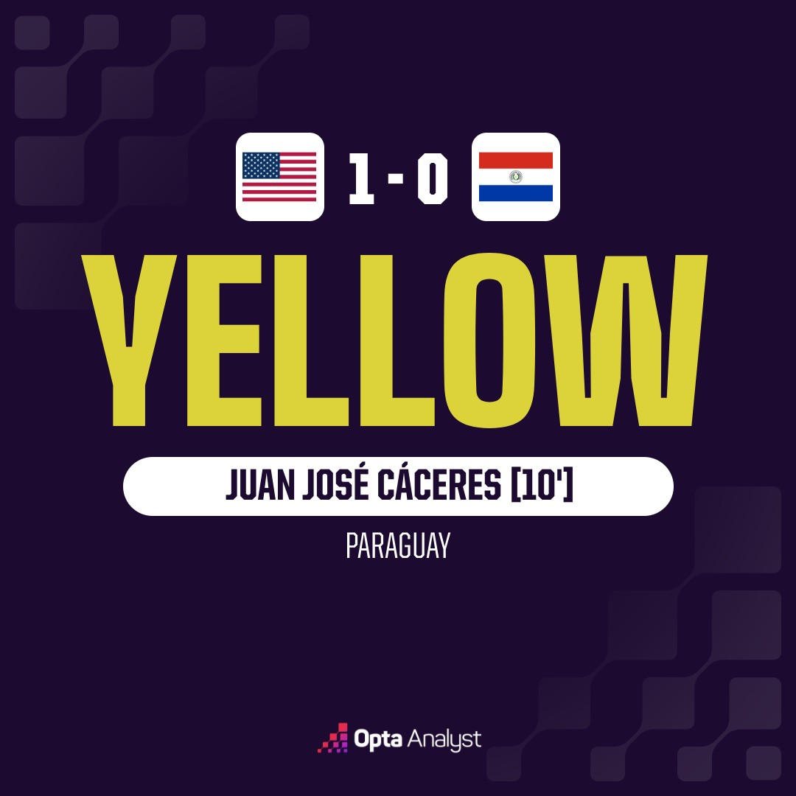
9'
Foul! A free-kick now in a dangerous area for United States, after Christian Pulisic is fouled by Juan José Cáceres. Can United States make the most of this opportunity?
9'
A rash challenge from Gustavo Gómez, who sends Folarin Balogun tumbling, giving United States a free-kick. It is not in a threatening position, but it gives them a chance to get back on the ball.
7'
Goal! Oh, and it is an own goal from Damián Bobadilla! A huge slice of bad luck for Paraguay, but United States will not care. They lead 1-0 and will now hope to push on!
6'
It’s been tight so far, and United States are making sure it stays that way with strong defensive discipline and well-timed clearances.
3'
The Paraguay defence steps up in time and there is a frustration for Folarin Balogun, who thought they were through until the flag goes up to signal offside.
3'
Chance! A shot from inside the area from Folarin Balogun was heading in, but Orlando Gill makes a fine stop to keep it out. A big save from the Paraguay shot-stopper!
2'
That is a disappointing effort from Diego Gómez, who went for glory but got their attempt wrong, and the shot sailed off target. A frustrating moment for Paraguay.
1'
Tyler Adams goes in on Julio Enciso and concedes a foul. The free-kick is not in a particularly dangerous area from United States’s viewpoint, though.
1'
Kick-off! Up and running at Los Angeles Stadium, with United States getting the ball rolling. Who will come out on top?
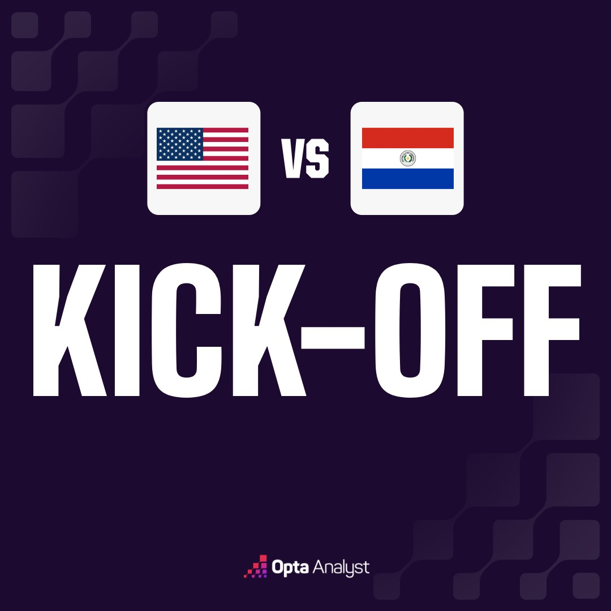
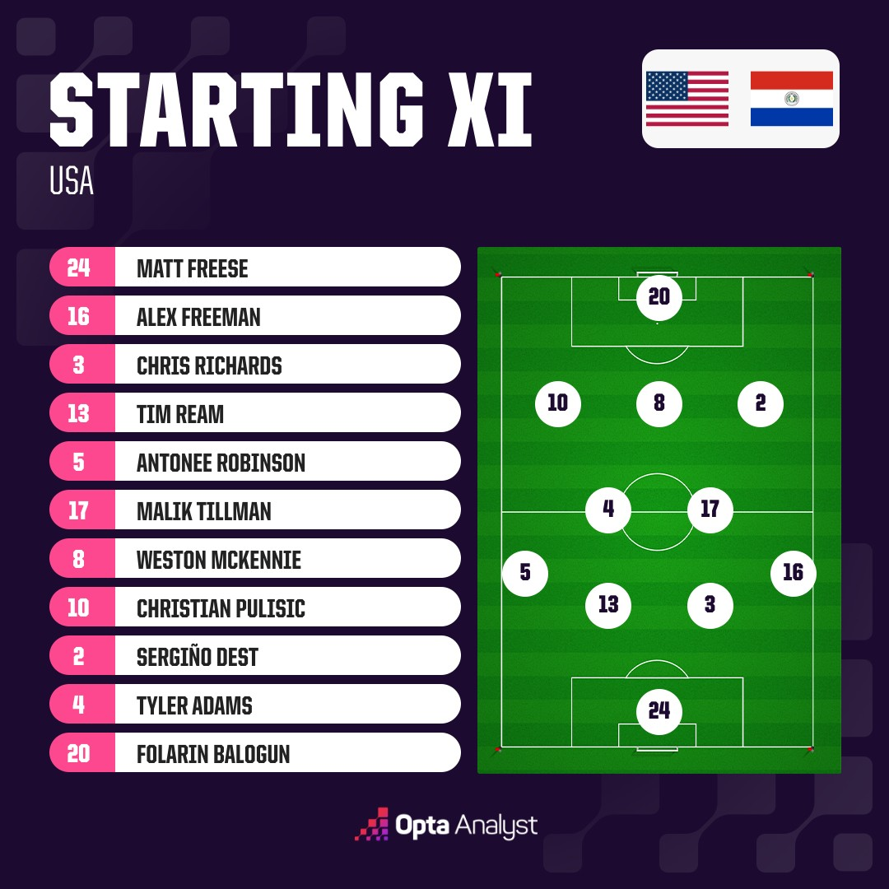
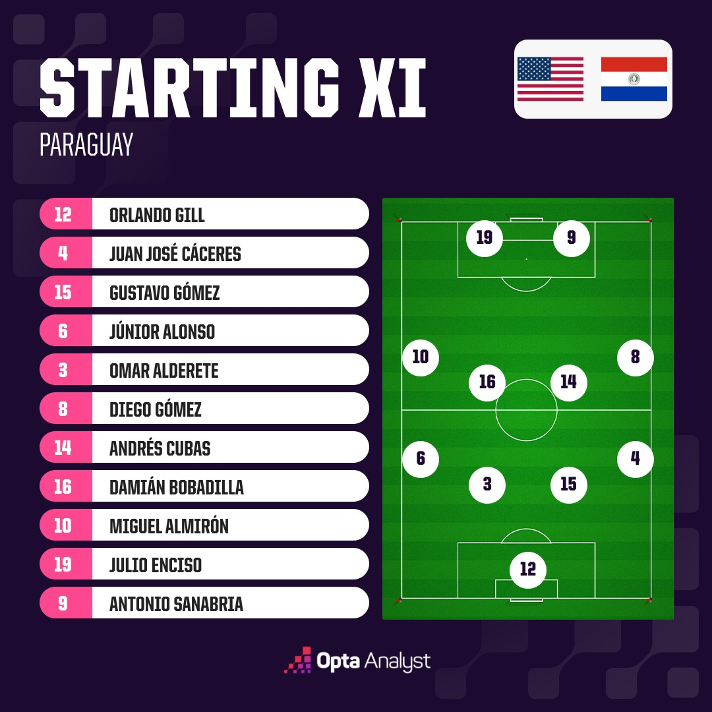
There have been 3 or more goals scored in total in each of United States's last 5 home games
There have been fewer than 3 goals scored in total in each of Paraguay's last 4 games
The United States take on Paraguay on Friday for their opening match of the 2026 Canada/Mexico/USA FIFA World Cup group stage at Los Angeles Stadium in Inglewood, California.
Both sides are playing their first match of the competition. The United States were defeated in their last match, losing 2-1 in a June 6 friendly against Germany at Soldier Field. Antonee Robinson was the only player on the scoresheet in the loss. In four games this year, they have one win and three losses.
Paraguay earned a 4-0 victory over Nicaragua in their last game, a June 5 friendly at Estadio ueno Defensores del Chaco. Four players scored in the win. In 2026, they have won two and lost one.
The previous fixture between the teams saw the United States win 2-1 in a friendly at Subaru Park last November. Giovanni Reyna scored first for USA in the fourth minute. Folarin Balogun also was on the scoresheet. Álex Arce scored the lone goal for the Paraguayan side in the 10th minute.
The United States have got the better of Paraguay of late with wins in three straight encounters, dating to June 2016. USA have outscored Paraguay 4-1 during their winning streak.
Six players rank as joint top scorers for the United States this year with one goal apiece. With one goal each this year, six players share the scoring lead for Paraguay.
In their last six matches in all competitions, the United States have won three and lost three. The USA side scored 13 and conceded 13 over that period, scoring first in four of the six contests. A majority of their goals (nine) came in the first half, while their opponents netted six times in the first 45 minutes. The Paraguayan side have won three and lost three in their last six. The Paraguayan side scored nine and conceded seven in that period, netting first in three of the six. They had three goals in the first half, while their opponents netted two times before the break.
-
General
Possession 65.2% 65.1934.8134.8% Possession lost in defensive half 31 316363 Possession lost in middle third 47 474747 Duels 114 114114114 Duels success rate 52.6% 52.63247.36847.4% Aerial duels 31 313131 Aerial duels won 54.8% 54.83945.16145.2% Successful dribbles 20 2066 Fouls won 17 171313 Offsides 2 211 Corner awarded 3 311 -
Distribution
Passes 598 598320320 Long passes 50 505858 Long passes proportion (%) 8.4% 8.36118.12518.1% Passing accuracy 85.3% 85.28471.87571.9% Passes in opponents' half 352 352118118 Passing accuracy in opponents' half (%) 79.0% 78.97755.93255.9% Total passes in the final third 201 2014747 Passing accuracy in final third (%) 71.6% 71.64236.1736.2% Forward passes 359 359214214 Forward passes (%) 60.0% 60.03366.87566.9% Through balls 1 100 Final third entries 78 783535 Penalty area entries 36 361515 Total open play crosses 12 1255 Crosses 17 1755 Crossing accuracy 17.6% 17.64700.0% -
Attack
Goals 4 411 Shots 16 1699 Shots on target 6 611 Blocked shots 4 455 Headed shots 2 200 Shots outside the box 3 355 Shots inside the box 13 1344 Shots accuracy excluding blocked shots 50.0% 502525.0% Shooting accuracy 37.5% 37.511.11111.1% Key Passes 12 1277 -
Defence
Tackles 7 72222 Tackles success rate 85.7% 85.71472.72772.7% Clearances 17 173333 Interceptions 11 1199 Recoveries 43 434040 Attacking third recovery 5 511 Defensive third recovery 19 192626 Midfield third recovery 19 191313 Recoveries in attacking half (%) 11.6% 11.6282.52.5% -
Discipline
Fouls conceded 13 131717 Yellow cards 1 155 Red cards 0 000